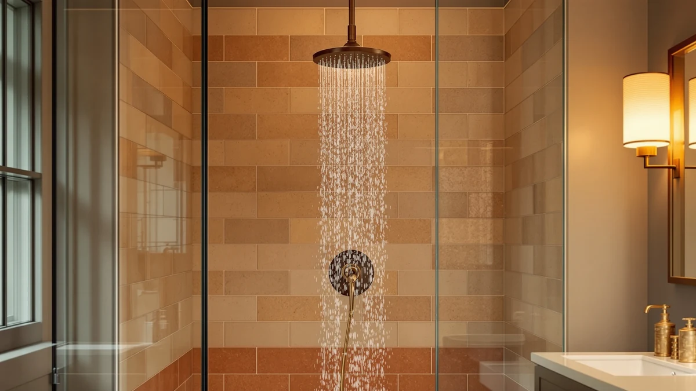

How to Clean Shower Heads and Faucets: Complete Guide (2026)
Prices and picks verified as of September 2026. Independent, reader-supported reviews.


Things to Know Before You Buy
- White vinegar dissolves mineral scale without scratching most finishes, and it costs a fraction of a specialty descaler.
- Hard water areas need this cleaning cycle every four to six weeks, while soft water homes can stretch it to every two to three months.
- Skip vinegar on brass, bronze, or gold-tone fixtures. The acid can dull those finishes over repeated soaks.
- You do not need to remove a shower head to clean it. A vinegar-filled bag secured with a rubber band works almost as well.
- Weak spray is usually mineral buildup, not a worn-out fixture, so try cleaning before you replace anything.
Learning how to clean shower heads and faucets is the fastest fix for weak, sputtering water flow, and it takes less effort than most homeowners expect. Mineral deposits from hard water build up inside the nozzles and around the aerator screen, narrowing the openings until the spray turns uneven or the pressure drops noticeably. That buildup is not a sign your fixture is failing. It is calcium and lime scale accumulating the same way it does on kettles and coffee makers in any home with mineral-rich water.
The fix does not require a plumber, a new shower head, or any specialty product from the hardware store. White vinegar breaks down the same mineral deposits that toothpaste ads warn you about, and a soft brush clears whatever the soak leaves behind. Below, we walk through five steps that take about 45 minutes from start to finish, most of which is passive soaking time. We researched manufacturer maintenance guides and plumber-recommended methods to put together a process that works on nearly every finish, from chrome to brushed nickel to matte black.
What You'll Need
Before you clean shower heads and faucets, gather everything below so you are not searching for a wrench mid-soak.
- Supplies: white vinegar, baking soda, a plastic sandwich bag and rubber band
- Tools: a soft-bristle toothbrush, an adjustable wrench
Step 1: Shut off the water and remove the fixture
The first move in cleaning shower heads and faucets is cutting the water before you touch anything. Start by turning off the water supply to the fixture. For a shower head, this usually means shutting the valve behind the wall or, if there is no dedicated shutoff, turning off the main water supply to the bathroom. For a faucet, close the shutoff valves under the sink.
Once the water is off, unscrew the shower head from the shower arm by hand. Most fixtures loosen with a quarter turn counterclockwise. If it resists, wrap the connection in a cloth and use an adjustable wrench to avoid scratching the finish. For a faucet, unscrew the aerator from the tip of the spout the same way. Set any rubber washers aside so you do not lose them.
Step 2: Soak the fixture in vinegar
Submerge the shower head or aerator in a bowl of undiluted white vinegar so the nozzles and screens are fully covered. Let it sit for 30 to 60 minutes. The acid in the vinegar dissolves calcium and lime deposits without pitting chrome, stainless steel, or most plastic housings.
If you would rather skip removing the shower head entirely, fill a plastic sandwich bag with vinegar, slide it up over the head so the spray face sits in the liquid, and secure the bag around the neck with a rubber band. Leave it in place for the same 30 to 60 minutes. This method works nearly as well as a full soak and saves you the wrench work.
Avoid vinegar soaks longer than an hour on brass, bronze, or gold-tone finishes. Extended acid exposure can dull those coatings even when the base metal is fine, so shorten the soak time whenever you clean a fixture with one of those finishes.
Step 3: Scrub away loosened buildup
After the soak, mix a small amount of baking soda with water to form a thick paste. Dip a soft-bristle toothbrush into the paste and scrub the nozzles, the threading, and any visible scale on the housing. The mild abrasive in the baking soda lifts residue that the vinegar loosened but did not fully dissolve.
Pay extra attention to the rubber nubs on handheld shower heads, since buildup tends to collect around their base. Reviewers of self-cleaning shower heads consistently note that a quick scrub of those nubs restores spray quality faster than a soak alone, which is why this scrubbing pass matters as much as the soak when you clean a shower head.
Step 4: Clear the nozzle holes
Even after scrubbing, some spray holes stay partially blocked. Take a toothpick, a straightened paperclip, or a sewing pin and gently push it through each nozzle from the outside in. Work slowly so you do not widen the hole or bend the housing around it.
For faucet aerators, separate the mesh screen and disc from the housing and rinse each piece individually under running water while flicking away any remaining grit with the toothbrush. This step is what restores an even spray pattern when you clean a faucet aerator, since a clogged hole redirects water pressure to the holes that are still open.
Step 5: Rinse, reassemble, and test the flow
The last rinse is what separates a properly cleaned shower head or faucet from one that still smells like vinegar. Rinse the fixture thoroughly under running water to flush out any loosened debris and remaining vinegar smell. Reattach the fixture by hand, turning it clockwise until snug. Avoid overtightening with a wrench, since that can crack plastic housings or strip the threading.
Turn the water supply back on and run the shower or faucet for a minute. Check that the spray pattern is even across every nozzle and that pressure feels back to normal. If a few holes still spray weakly, repeat the soak and scrub on those sections rather than starting the whole process over.
Common Mistakes to Avoid
The biggest mistake people make when learning how to clean shower heads and faucets is reaching for bleach or a heavy-duty descaler instead of vinegar. Bleach does nothing to dissolve mineral scale, and harsh descalers formulated for appliances can strip the protective coating off brushed nickel or matte black fixtures, leaving dull patches that never look right again.
Another frequent error is skipping the shutoff step. Unscrewing a shower head or aerator while the line is pressurized sprays water across the bathroom and risks stripping the threading if the fixture spins unevenly under pressure. Always shut off the supply first, even for a quick clean.
People also over-scrub with metal tools. A wire brush or steel wool might feel more thorough, but it scratches chrome and plastic alike, creating tiny grooves where mineral deposits collect even faster next time. Stick with a soft-bristle toothbrush and a soft cloth.
Finally, many homeowners soak brass or gold-tone fixtures in vinegar for hours, assuming longer means cleaner. Extended acid exposure dulls those finishes. Cap any soak at 60 minutes, and check the fixture's finish before you start. When in doubt, a shorter soak followed by a second round beats one long, damaging one.
Our Top Picks
If regular cleaning only buys you a few extra months before mineral buildup creeps back, a filtered or self-cleaning shower head can cut down on how often you need to repeat this process. Here are three options worth considering based on price, features, and verified owner feedback.

Editor's Pick
MakeFit Filtered Shower Head with
A multi-stage filter cartridge cuts down on the chlorine and sediment that speed up mineral buildup, so you spend less time repeating the cleaning steps above.
$39.99
Check Price on Amazon
Best Value
HOMEDEC Double Shower Heads Full
A dual-head rainfall and handheld combo for households that want full coverage without adding a second fixture to the wall.
$1,050.98
Check Price on Amazon
Premium Choice
Veken Filtered Shower Head with
A replaceable filter cartridge targets hard water minerals directly at the source, which owners report keeps the spray holes clearer for longer between cleanings.
$49.98
Check Price on AmazonFrequently Asked Questions
How often should I clean my shower head and faucets?
Clean your shower head and faucets every four to six weeks in areas with hard water, and every two to three months if your water is soft. If you notice uneven spray patterns or slower flow, that is your fixture telling you it is overdue.
Does vinegar damage shower head finishes?
Plain white vinegar is safe on chrome, stainless steel, and most plastic shower heads for soaks under an hour. Avoid it on brass, bronze, or gold-tone finishes, since the acid can dull the coating. Rinse thoroughly afterward regardless of finish.
Can I clean a shower head without removing it?
Yes. Fill a plastic bag with vinegar, slide it over the shower head so the nozzles are submerged, and secure it with a rubber band. This works nearly as well as a full soak and skips any wrench work.
Why does my faucet aerator get clogged faster than my shower head?
Faucet aerators sit closer to the end of the pipe and pack a fine mesh screen into a small space, so sediment and mineral flakes concentrate there faster. Shower heads have wider nozzles, so buildup takes longer to fully block the flow.
Will cleaning fix a shower head that has always had weak pressure?
If the fixture has never performed well, even from the day you installed it, the cause is more likely your home's water pressure or pipe diameter than mineral buildup. Cleaning restores flow that has degraded over time. It will not add pressure that was never there.
Verdict
Knowing how to clean shower heads and faucets saves you the cost of a replacement fixture in most cases. A vinegar soak, a soft-bristle scrub, and a careful pass through each nozzle hole clear out the mineral scale that causes weak, uneven spray, and the whole process costs about $10 in supplies you likely already have under the sink. Set a recurring reminder every four to six weeks if your water is hard, and stretch that to every two to three months if it is soft.
If you have gone through this process more than twice on the same fixture in a year and the pressure keeps dropping, the shower head itself may be past its useful life rather than simply scaled up. In that case, a filtered option like the MakeFit shower head reduces how much mineral and chlorine buildup reaches the nozzles in the first place, which means fewer cleaning cycles and steadier pressure between them.